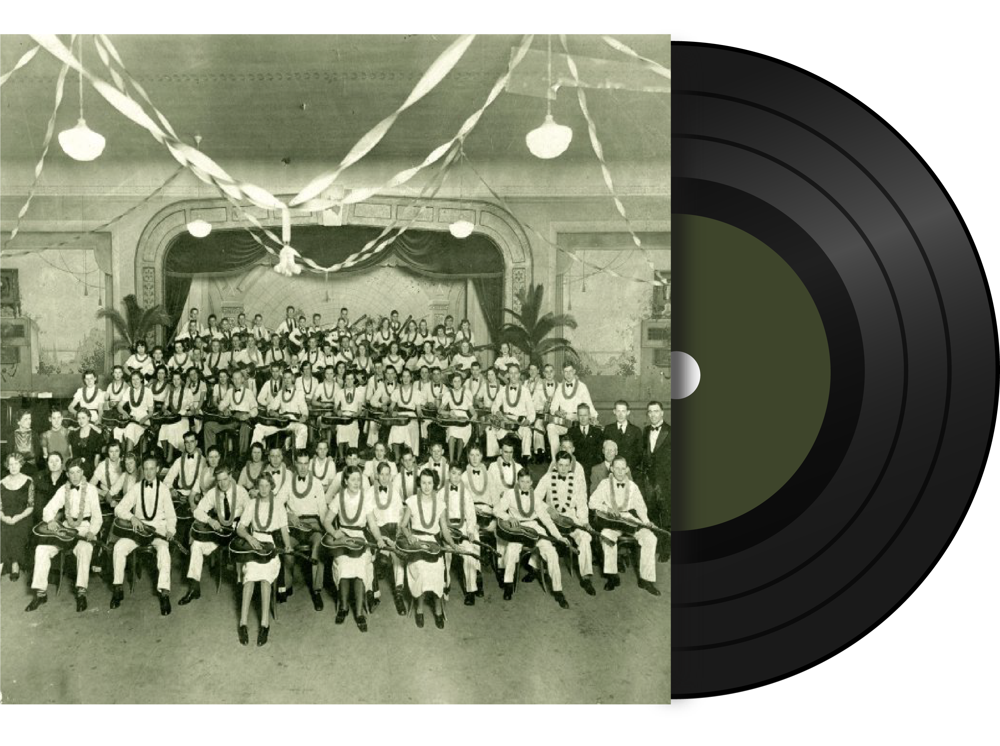
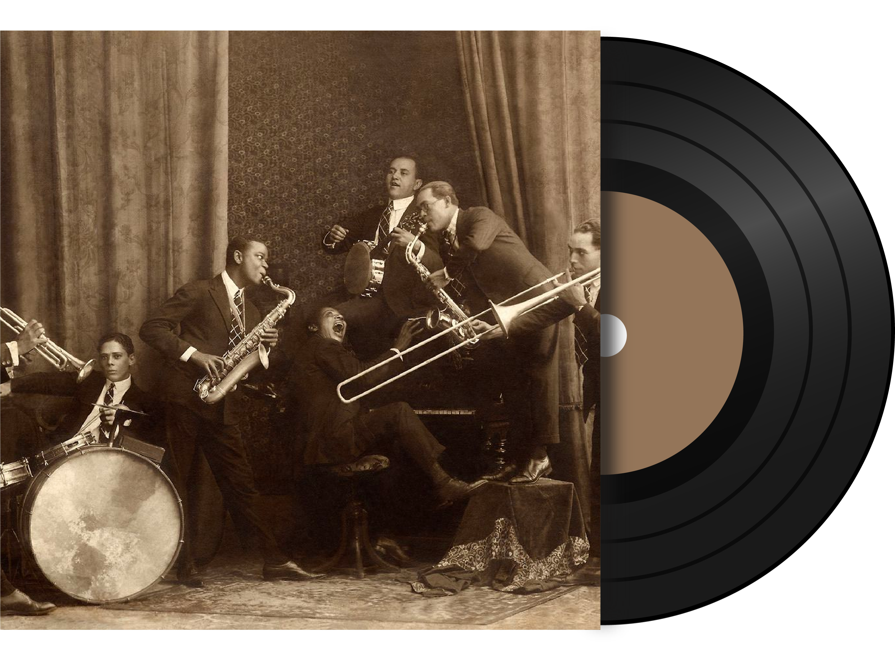
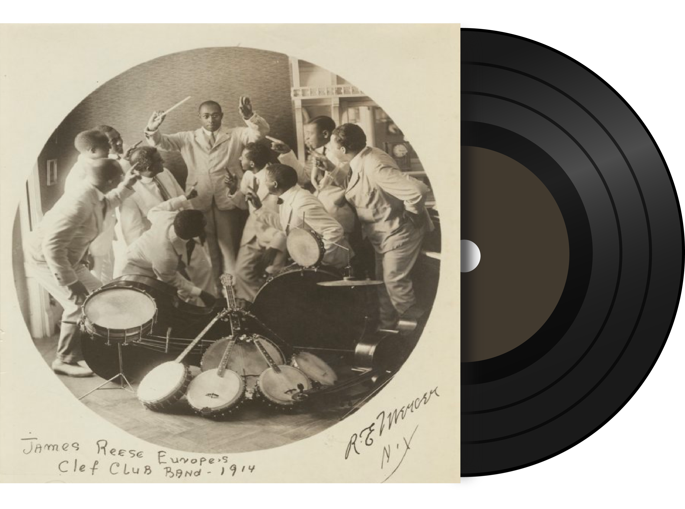
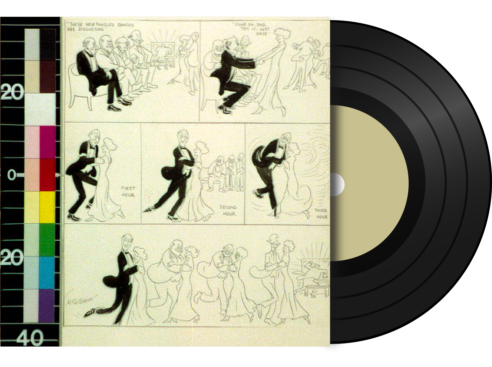
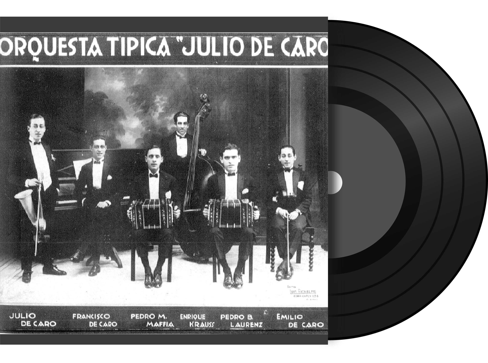
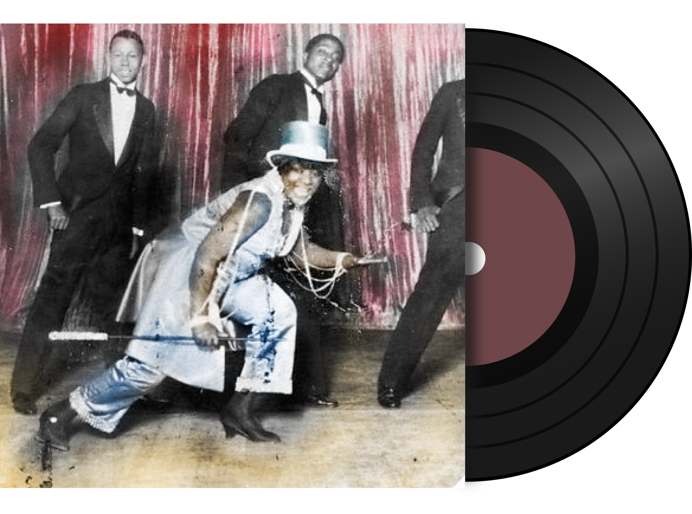

What was the dance craze that inspired W.C. Handy’s legendary “St. Louis Blues” (1914)?
A: The tango
learn moreWhat was the most popular kind of band in America and worldwide in 1900?
A: The brass band
learn moreHow did recording transform music listening?
A: It brought new kinds of music into the home.
learn moreWhat role did Black people from the British Caribbean play in the Jazz Age?
A: Migration patterns and the record business made them central.
learn moreWhat was the dance craze that inspired W.C. Handy’s legendary “St. Louis Blues” (1914)?
What was the most popular kind of band in America and worldwide in 1900?
How did recording transform music listening?
What role did Black people from the British Caribbean play in the Jazz Age?

Did jazz come from Latin America?
A: In part. Jazz may be quintessentially American, but its origins were transnational.
learn moreWho was the first African American recording star?
A: George W. Johnson
learn moreWas the United States the only country where the racist tradition of blackface performance was popular?
A: No. Racist caricature was prominent in many other countries in the Americas.
learn moreWhat musical instrument was invented for use in early recordings?
A: The "Stroh" violin
learn moreDid jazz come from Latin America?
Who was the first African American recording star?
Was the United States the only country where the racist tradition of blackface performance was popular?
Who was the first African American recording star?

Who was the King of Ragtime?
A: Scott Joplin, but also Irving Berlin.
learn moreWhat city was home to two record factories pressing more than 4 million discs per year by 1926?
A: Buenos Aires, Argentina
learn moreWhat Appalachian folk instrument came from Africa?
A: The banjo
learn moreJazz, son, samba, and tango songs all became musical symbols of their nations; when were they first recorded?
A: 1917
learn moreWho was the King of Ragtime?
What city was home to two record factories pressing more than 4 million discs per year by 1926?
What Appalachian folk instrument came from Africa?
Jazz, son, samba, and tango songs all became musical symbols of their nations; when were they first recorded?

Where do the blues come from?
A: The music business of the 1910s.
learn moreWho made sexy ragtime dances safe for the general public?
A: Vernon and Irene Castle.
learn moreHow did samba, an Afro-Brazilian genre, come to be celebrated as the national music of Brazil?
A: Thanks, partly, to the global music business.
learn moreWhy wasn't Jamaican music recorded before the 1950s?
A: Record company scouts decided not to visit the island.
learn moreWhere do the blues come from?
Who made sexy ragtime dances safe for the general public?
How did samba, an Afro-Brazilian genre, come to be celebrated as the national music of Brazil?
Why wasn't Jamaican music recorded before the 1950s?

Why did James Reese Europe forbid his musicians to bring sheet music to gigs?
A: He was playing to white stereotypes of African Americans.
learn moreWho was the first country singer?
A: Vernon Dalhart.
learn moreWhat surprised record companies most about the music consumers wanted to hear?
A: The enormous demand for "ethnic" recordings.
learn moreWhy does the music recorded before 1920 all sound alike?
A: Genre borders were porous, and popular music had not yet been nationalized.
learn moreWhy did James Reese Europe forbid his musicians to bring sheet music to gigs?
Who was the first country singer?
What surprised record companies most about the music consumers wanted to hear?
Why does the music recorded before 1920 all sound alike?
